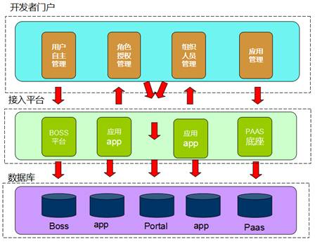
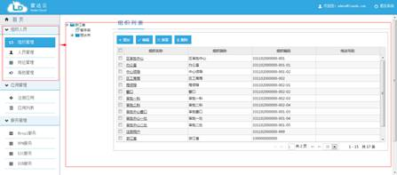
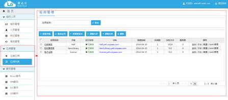
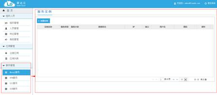

文档编号：ICSS-PM-RD140417-001
|
|
Raportal V6.0 产品白皮书 （Radar
cloud Version 6.0） |
北京中软国际信息技术有限公司
2014年4月
文档版本：1.0
目录
开发者门户是中软国际为开发者推出的一个面向行业的云平台，它支持多种框架、语言、运行时环境、云平台及应用服务，使开发人员能够在几秒钟内进行应用
程序的部署和扩展，无需担心任何基础架构的问题。平台在各层级都可水平扩展，既能在大型数据中心里运行，也能运行在一台桌面电脑中，二者使用相同的代码 库。
作为新一代云平台，开发者门户专为私有云计算环境、企业级数据中心和公有云服务提供商所打造。开发者门户可以简化现代应用程序的开发、交付
和运行过程，在面对多种公有云和私有云选择、符合业界标准的高效开发框架以及应用基础设施服务时，可以显著提高开发者在云环境中部署和运行应用程序的能力 。
优点显而易见：
基于多租户的设计理念
底层有强大的paas底座来支撑
具有完善的组织人员管理，以rest接口形式对外开放
采用RBAC的权限设计模式，进行权限管理控制
可对各种开发应用进行上传、部署等管理
可选择购买自己有用的服务（EIC、BPM）等
.........
RAPORTAL基于J2EE技术开发，可在目前主流的应用服务器和数据库平台上运行，如IBM WebSphere、Bea WebLogic、DB2、oracle、mysql等

作为开发者门户，提供敏捷开发，操作简易、功能齐全、高性能的平台，是我们研发的动力，采用多租户的设计理念，达到多个租户共用一套系统，租户间数据隔离，同时向云计算平台迈出了坚实的一步。
有boss系统接入，服务收费等看似难的问题，将会变的简单。
当第三方应用部署在raportal中，以前会面临数据库内存不够，性能低、动不动就宕机等问题，现在我们不用担心这些问题，因为有强大的靠山“paas”底座来支撑整个应用的运行、以及数据库资源的合理分配。
本着为租户服务的遵旨，我们在提供各种功能时，都站在租户的角度来考虑哪些功能是必须的、哪些功能是租户可选的、哪些功能租户没用的。通过这些流程后，我们现在所剩的功能都是和租户的自身利益息息相关。其特点如下：
1. 贴心的租户体验设计， 方便租户使用，降低学习难度。
2. 安全透明的权限操作（rbac设计理念），规避复杂业务数据带来的风险。
3. 完善的组织管理模型，适合99%大、中、小企业组织架构。
4. 能够和目前流行的工作流框架（JBPM等）完美结合。
5. 可对第三方应用进行部署、启动、分配各种资源，并绑定需要的各项服务。
6. 遵循各项业界标准：J2EE、XML、JAAS、RBAC、RESTFUL等
RAPORTAL提供一套完整的组织人员体系，开发者可以通过RAPORTAL统一管理这些基础数据，达到多应用共享。组织人员体系包括组织管理、人员管理、岗位管理、角色管理、角色授权等功能。

图2.1-1应用管理
RAPORTAL提供应用管理的功能，开发者可以通过注册应用和应用列表方便快捷的往PAAS平台上部署和管理（包括重启、重新部署、调整内存和实例、监控、日志、配置、SAAS管理等功能）应用，达到与PAAS平台的无缝对接。

RAPORTAL对RCloud提供的服务（包括Mysql服务、BPM服务、EIC服务、ESB服务等）产品进行了全面的整合，开发者可方便的对各项服务进行购买和操作使用。

RAPORTAL尽可能避免使用难以理解的专业用词，尽可能把功能操作设计的合理化、人性化。可以使开发者快速理解、掌握和操作RAPORTAL的各项功能。
在实施RAPORTAL平台之后，可以使企业和开发人员获得显著的收益，这些收益的价值体现在以下几个方面：
RAPORTAL平台向用户提供了高效的工具用来简化开发测试环境的管理。还有自动化的资源管理以及高度的灵活性与可扩展性。软件开发与测试人员可以通过门户以按需的形式快速的构建并访问相关资源，减少了在环境构建中的人工干预环节，有效地提升了软件企业 IT 部门和开发部门的工作效率。据研究，在应用开发测试云之后软件企业的平均硬件利用率从 25%提升到 50%以上，在硬件利用率上升的同时降低整体运行能耗，实现绿色的 IT 软件开发。
RAPORTAL平台开发测试云通过快速部署的虚拟化开发与测试环境，加速了应用程序的开发过程。在开发测试云中项目工件都存储在统一数据库中，可促进团队协作，这就减少了团队成员在交接任务上花费的时间，并简化了开发过程，使每个角色都可以专注于在自己的工作价值，无缝衔接上下手的工作。此外ResourceOneStudio提供的丰富团队协作功能可以有效地提升开发与测试团队效率，缩短应用程序交付时间。
RAPORTAL平台将会采用专业管理运维手段，确保数据安全以及高可靠性服务标准。PAPORTAL平台服务器采用庞大的集群设备，提高了数据响应速度，保证了服务器数据稳定、安全性更高。
Windows2000/2003 、AIX 、HP-Unix、 Linx（红旗）
DB2 8.1及以上版本、Oracle 8i及以上版本、Microsoft SQL Server 2000及以上版本、人大金仓6.1、达梦6.1
Weblogic 7.0 及以上版本、 WebSphere 5.0及以上版本、金蝶Apusic Application Server5.1、tomcat6.0
FireFox3.0及以上版本，Internet Explore 6.0及以上版本、Google Chrome以上
北京中软国际信息技术有限公司
地址：北京中关村科学院南路2号融科资讯中心C座北楼12F-15F
电话：010-82861666 传真：010-82862809